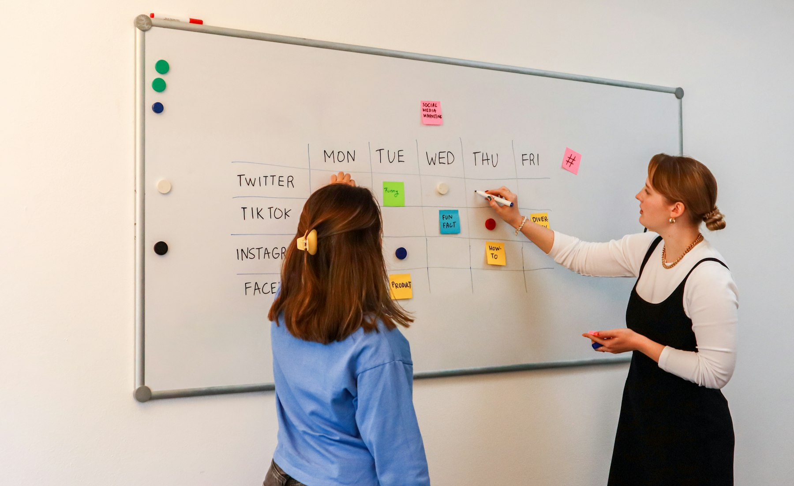

TL;DR
Young professionals can quickly establish passive income through low-effort strategies like affiliate marketing and digital products. Examples include creating online courses on platforms like Teachable or utilizing rental arbitrage. Avoid common pitfalls like overextending finances and misunderstanding effort involved for sustained success.
Passive Income Ideas for Busy Young Professionals

For young professionals overwhelmed by their day jobs, passive income may seem out of reach. However, it doesn't have to be. Options like automated investments, print-on-demand products, or affiliate marketing can provide a steady income stream without consuming significant time.
Imagine setting up a system where, after an initial working period, your effort is minimized and income continues to flow. In this blog, you’ll discover how to build these income streams quickly, allowing you to change your financial landscape.
Why Passive Income Attempts Often Fail
### Why Passive Income Attempts Often Fail
Many young professionals dive into passive income ideas believing that they require little to no effort. This misconception can lead them to invest time and money into endeavors that don’t yield results.
For example, someone might pour $1,000 into creating an online course without conducting thorough market research, only to find that their target audience is uninterested.
If this course was designed based on assumptions rather than solid data, the projected income of $500 per month could evaporate into thin air.
Additionally, the lack of a structured plan can create distractions that significantly reduce the chances of success. A young professional may decide to launch a blog while simultaneously pursuing a dropshipping business.
While both have the potential for passive income, juggling multiple projects without a clear strategy could lead to burnout. Statistically, over 80% of bloggers never reach income-generating levels, often due to disorganization and inconsistent content creation.
Take Emily, for instance—a 27-year-old marketing analyst who started a side hustle in affiliate marketing. Eager to make passive income, she invested around $500 in ads to promote products.
However, without learning about SEO or optimizing her website, Emily's ad spend led to only a $50 return in the first month, leaving her not only financially drained but also demotivated.
If she had dedicated time upfront to understand her audience and refine her content strategy, she could have mitigated her losses and eventually turned her efforts into a profitable venture.
Recognizing that passive income requires initial input, diligent planning, and ongoing tweaks is vital to avoid frustration and wasted resources.
While the allure of passive income is strong, it’s essential to approach it as you would any serious business endeavor—complete with research, strategy, and dedication.
Building an Automated Income Workflow
To structure a passive income workflow, follow these essential steps: 1. Select Your Niche: Identifying a niche that aligns with your passions is key. For example, if you enjoy fitness, consider creating a blog or YouTube channel focused on workout tips. 2. Generate Content: Use your expertise to create digital products, such as eBooks or online courses. Platforms like Teachable and Gumroad can help streamline the selling process. 3. Leverage Affiliate Marketing: Choose affiliate programs that resonate with your audience. Amazon's Affiliate Program is a great starting point for anyone new to this space. 4. Automate Your Systems: Use tools like Buffer for social media posting or email services like Mailchimp to manage newsletters with minimal effort.
By investing time in this workflow, young professionals can set up a system that pays dividends as sales and leads roll in automatically.
Real-Life Success: Navigating Rental Arbitrage
Consider Sarah, a young professional who strategically utilized rental arbitrage to create a stable income source. Her investment involved leasing an apartment in a high-demand area for $1,500 per month.
By furnishing it and listing it on Airbnb, she attracted short-term renters, charging an average of $200 per night. After a month of mild occupancy (let’s say 15 nights), she pulled in $3,000.
However, she faced initial costs, including furnishing and decor, totaling about $2,500. The first month was a whirlwind of setup, marketing, and handling inquiries, but Sarah recognized the potential.
Despite occasional vacancy risks, the monthly return significantly outweighed her expenditures, proving a lucrative model that fit her lifestyle.
Avoiding Common Passive Income Pitfalls
Errors abound in the pursuit of passive income, with the most common mistake being the misconception of 'set it and forget it.' Many young professionals mistakenly think that once a product is launched, no further action is required.
In reality, continual marketing efforts and infrastructure adjustments are key to sustaining income. For example, ignoring customer feedback can result in dwindling sales, as the product may not meet the evolving needs of your audience.
Another pitfall is overextending financially at the start. Committing funds without a clear strategy can lead to financial strain, making sustainability tougher.
Recognizing that passive income requires strategy and ongoing effort is essential.
Next Steps for Effective Passive Income Generation
To elevate your passive income strategies, consider these actions: 1. Join Online Communities: Networking with like-minded individuals can provide inspiration and collaboration opportunities. Platforms like Facebook or Reddit have several groups focused on passive income. 2. Reinvest Earnings: Instead of cashing out profits immediately, reinvest into marketing strategies or new product development to help grow your ventures exponentially. 3. Experiment Continuously: The landscape of passive income is ever-evolving. Trying out new platforms or affiliate programs can reveal hidden opportunities.
Taking these steps not only ensures that you are maximizing your earnings but also prepares you to adapt and thrive in your passive income journey.
FAQ
What are the best passive income ideas for young professionals?
Some of the best passive income ideas include affiliate marketing, creating digital products like eBooks and online courses, and rental arbitrage.
How much time do I need to invest to start earning passive income?
You may need to invest anywhere from a few hours to a few weeks upfront depending on the method you choose, with ongoing minimal time commitments.
This article is reviewed for practical usefulness and updated when relevant information changes.
Next step
Use the article as a decision point, not just reading material. Your next system matters more than more browsing.
Search more articles
Find related tools, workflows, and guides.
Photo credits
- Photo 1: Walls.io via Unsplash
- Photo 2: Paymo via Unsplash
- Photo 3: Luis Quintero via Unsplash
- Photo 4: Compagnons via Unsplash
- Photo 5: Van Tay Media via Unsplash